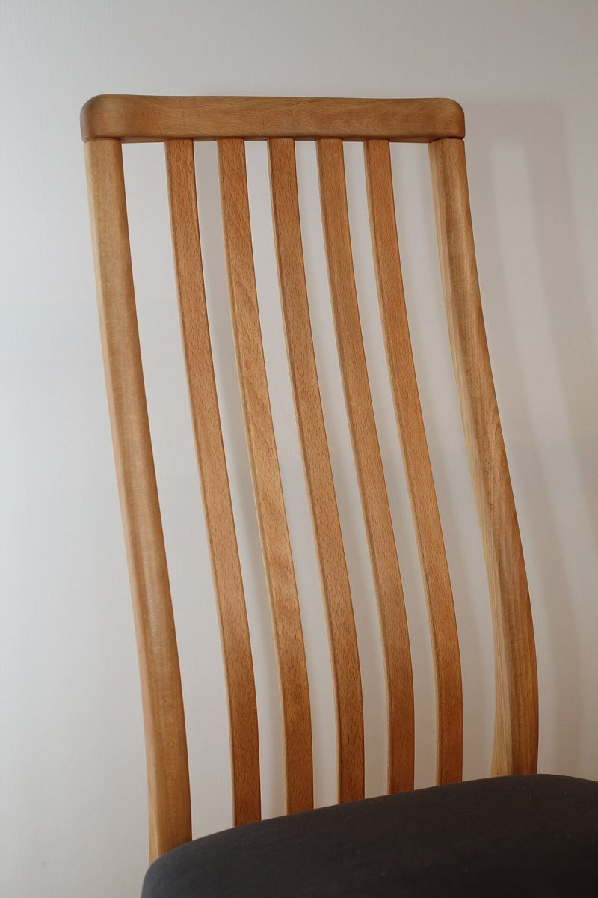

店のこと
店のこと
お店について確認できているのは、所在地とInstagramのアカウントだけです。
このページの「想像してみる」部分は、制作側が想像して書いたものです。お店の実際の様子・考え・メニューとは関係がありません。
確認できていること
- 店名は「kuroda」、業種はカフェ
- 所在地は新潟県燕市吉田上町４−２６(〒959-0245)
- 電話番号はなし。連絡はInstagramから
- 営業時間・定休日・メニュー・価格・ご予約・駐車場は準備中

想像してみる
黒の置き方を三つ思い浮かべる
由来は分かりません。制作側は店名から「くろ」を連想して、黒い珈琲、黒い影、黒い輪郭といった、黒の置き方をあれこれ想像しました(実際のお店の姿ではありません)。

